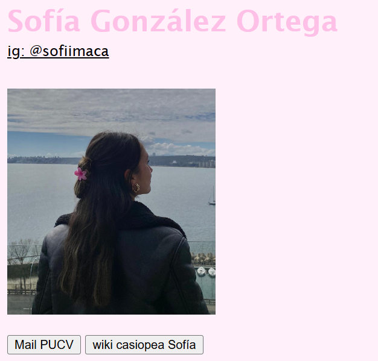
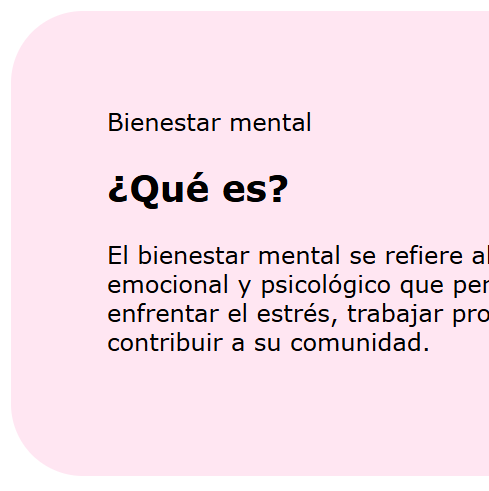
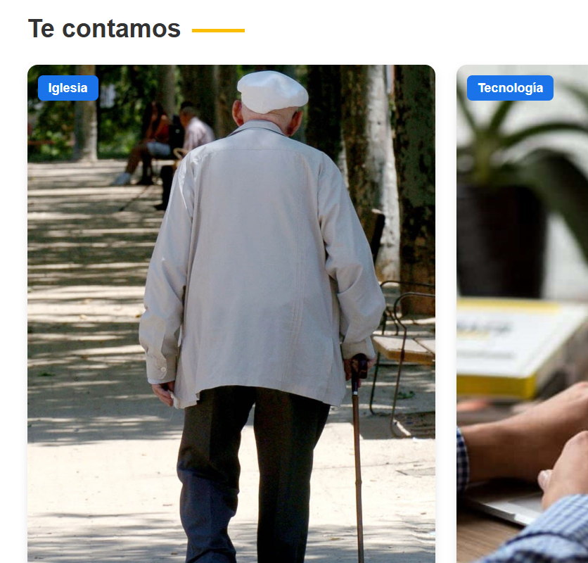
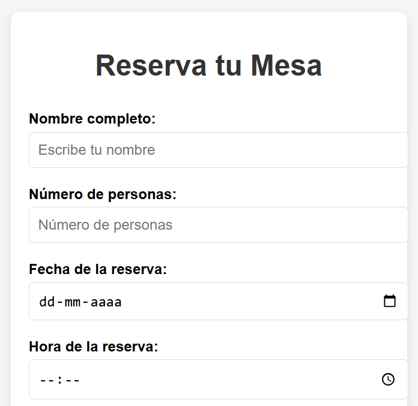

Ejercicios
Durante este semestre en la asignatura, nos enfocamos en el diseño UX, comenzando con pequeños ejercicios prácticos que nos permitieron trabajar en HTML, CSS y JavaScript. Estas actividades iniciales nos ayudaron a comprender los fundamentos del desarrollo de interfaces y a aplicar principios de diseño centrado en el usuario. Finalmente, todo el aprendizaje fue volcado en la creación y construcción del proyecto final de la asignatura, consolidando así las habilidades y conceptos adquiridos a lo largo del curso.

Primera pág. web
Ejercicio 1

Cuadro de texto
Ejercicio 2

Recreación web PUCV
Ejercicio 3

Formulario
Ejercicio 4